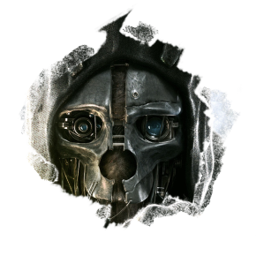

 LOS JUEGAZOS NEXT-GEN 2016
LOS JUEGAZOS NEXT-GEN 2016
LOS JUEGAZOS NEXT-GEN 2016
Ficha técnica
Plataformas: Xbox One, Ps4 y PC
Desarrollador: Arkane Studios
Distribuidor: Bethesda Game Software
Genero: Acción, Sigilo y Aventura
Lanzamiento: 2016
Sinopsis
Videojuego del genero acción, aventura y sigilo en 1º persona. Desarrollado por el estudio Arkane Studios y publicado por Bethesda Softworks, es la secula del juego del año y sleeper Dishonored. La historia transcurre 15 años después de la plaga que azoto Dunwall, ahora Emily Kaldwin convertida en asesina decice buscar respuestas tras la plaga que asolo Dunwall. La secuela nos llevara a la isla de Serkonos donde nació el protagonista Corvo.
Autor: Julián Andrés Dabán Viloria Copyright All Rights Reserved 2015-2016